import pandas as pd
import seaborn as sns
import matplotlib.pyplot as plt
from nltk.tokenize import word_tokenize
from nltk.corpus import stopwords
import numpy as np
from sklearn.feature_extraction.text import CountVectorizer
from sklearn.preprocessing import LabelEncoder
from sklearn.model_selection import train_test_split
from utils.utils import time_plot, total_variable, my_wc
prm={"figure.figsize":(9, 4),
'figure.dpi':150}
plt.rcParams.update(prm)
sns.set_palette("viridis")O Spotify é um serviço digital que dá acesso instantâneo a milhões de músicas, podcasts, vídeos e outros conteúdos de criadores no mundo todo. Pode ser acessado pelo browser, sendo possível também baixar o aplicativo, estando disponível para diversas plataformas digitais. Nesse ensaio vamos analisar os reviews feitos na Play Store sobre a versão para android, dessa maneira vamos examinar o comportamento dos reviews (estrelas), junto com o texto deixado pelo autor.
Como é de conhecimento geral, as reclamações fazem mais barulho que os parabéns, nesse sentido espera-se uma quantidade considerável de avaliações nota 1 do aplicativo, por inúmeras questões, pois expectativas não satisfeitas, geram frustrações, e uma maneira de destilar tamanha frustração é jogar toda a fúria no review na Play Store. Avaliamos então pela figura NN, a proporção das avaliações
df = pd.read_csv("data/reviews.csv")grouped_data = df.groupby("Rating", as_index=False).size()
grouped_data = grouped_data.assign(Proporcao=grouped_data["size"] / grouped_data["size"].sum())
sns.barplot(data= grouped_data, x="Rating", y="Proporcao")
plt.xlabel("Avaliação")
plt.ylabel("Proporção");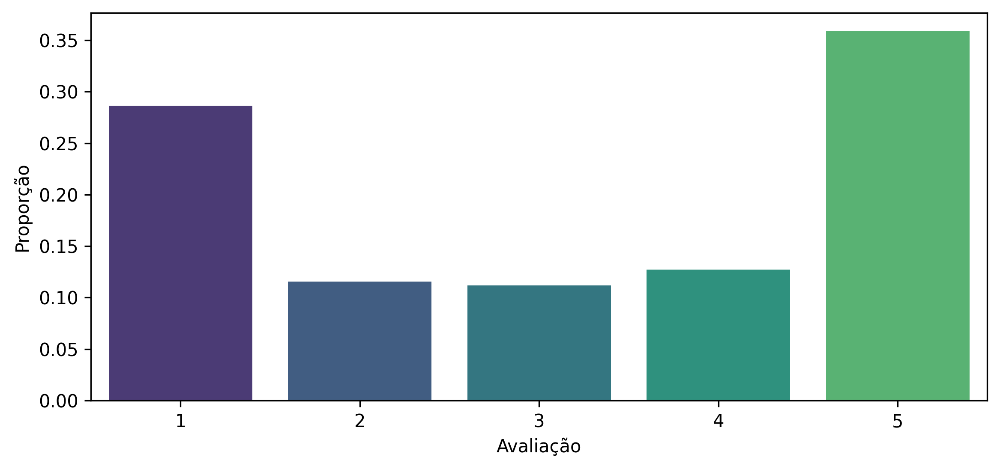
Notamos assim uma disputa entre amor e ódio em relação ao aplicativo.
A partir de agora vamos aprofundar a análise desses reviews e relação ao tempo, e em seções seguintes aprofundaremos ainda mais a análise em relação aos reviews considerando também o texto deixado pelo autor.
df['Time_submitted'] = pd.to_datetime(df['Time_submitted'])
#%%
df['month'] = df['Time_submitted'].apply(lambda x: x.month)
df['hour'] = df['Time_submitted'].apply(lambda x: x.hour)
df['day'] = df['Time_submitted'].apply(lambda x: x.day)Vamos nessa subseção averiguar os review em termos de contagens e valores médios referentes, a mês, dia e hora.
time_plot(df, 'month')/home/alissonrp/Documents/SpotifyReviews/utils/utils.py:27: UserWarning:
Matplotlib is currently using module://matplotlib_inline.backend_inline, which is a non-GUI backend, so cannot show the figure.
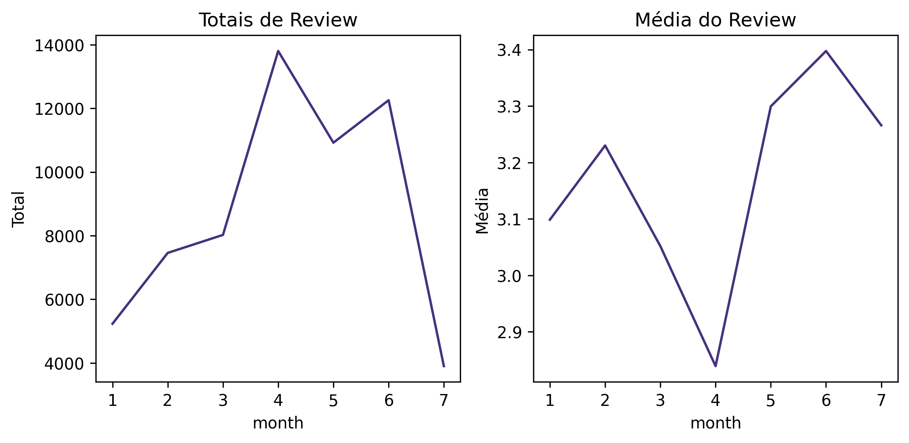
time_plot(df, 'day')/home/alissonrp/Documents/SpotifyReviews/utils/utils.py:27: UserWarning:
Matplotlib is currently using module://matplotlib_inline.backend_inline, which is a non-GUI backend, so cannot show the figure.
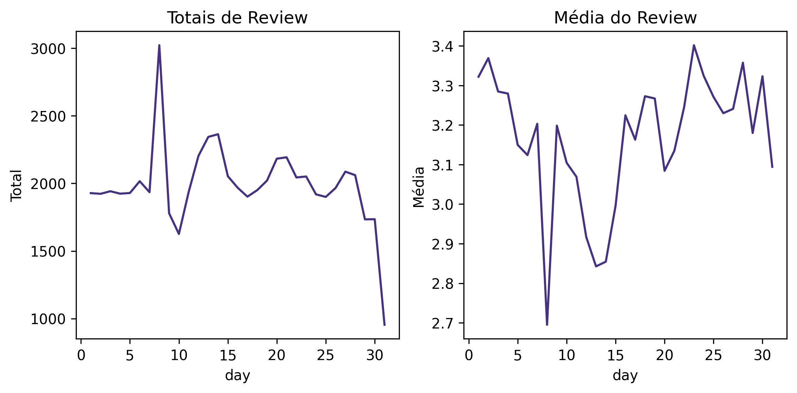
time_plot(df, 'hour')/home/alissonrp/Documents/SpotifyReviews/utils/utils.py:27: UserWarning:
Matplotlib is currently using module://matplotlib_inline.backend_inline, which is a non-GUI backend, so cannot show the figure.
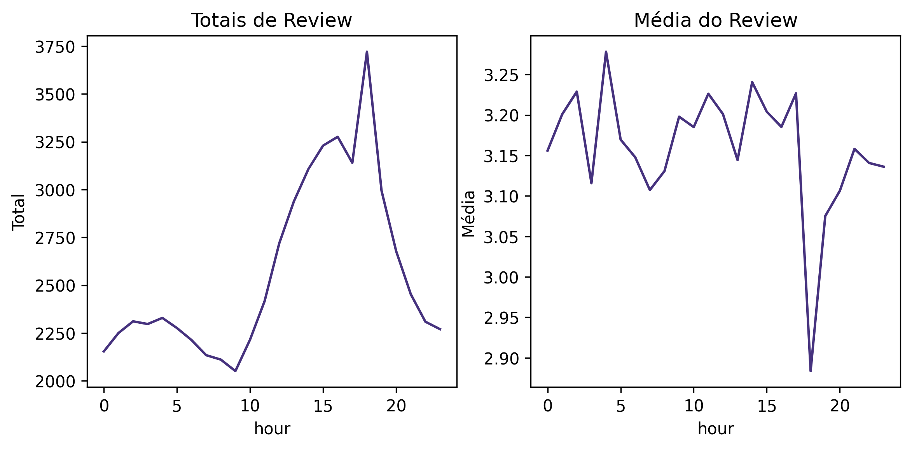
Em toda análise textual é necessária um bom pré processamento dos dados, portanto é isso que vamos tratar nessa seção. Realizaremos:
Porém antes do processamento, vejamos o comportamento da frequência das palavras: Para o casos de 5 estrelas notamos palavras positivas como “love”, “great” e “easy” em destaque.
my_wc(df, 4)E para o caso de reviews de 1 estrela nota-se palavras referentes a problemas como “fix”, “even” e “issue”
my_wc(df, 'podre')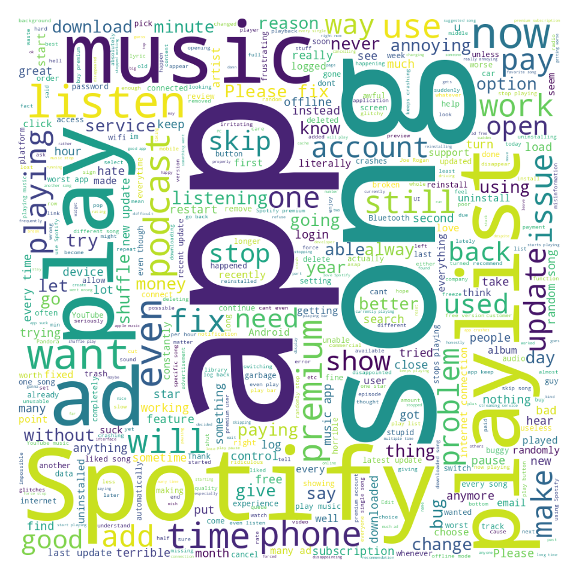
Nota-se em ambos os casos que palavras como “Spotify”, “Song”, “App” e “Song” possuem uma alta frequência, porém não agregam muita informação para a análise, assim é interessante a remoção delas.
Vamos aqui nessa subseção recategorizar a variável numérica da avaliação: * 1 a 2 Estrelas: Negativo * 3 Estrelas: Neutro * 4 a 5 Estrelas: Positivo
Portanto a partir desse momento, quando refere-se a review positivos, estamos nos referenciando a 4 a 5 estrelas e assim por diante.
df['Review_words'] = [len(x.split()) for x in df['Review']]
rating = df['Rating']
df['Sentiment'] = np.where((1 <= rating) & (rating <= 2), 'negative',
np.where((4 <=rating) & (rating<=5), 'positive', 'neutral'))Vamos nessa subseção remover as stops words, fazer algumas análises em relação aos reviews agora categorizados e também refazer algumas análises da seção anterior.
stop_words = set(stopwords.words("english"))
stop_words.update(["app", "song", "Spotify", "music", "spotify"])
df['Review_wsw'] = df['Review'].apply(lambda x: " ".join(x for x in x.split() if x not in stop_words))my_wc(df, var = "Review_wsw", Filter = 4)my_wc(df, var = "Review_wsw", Filter = "podre")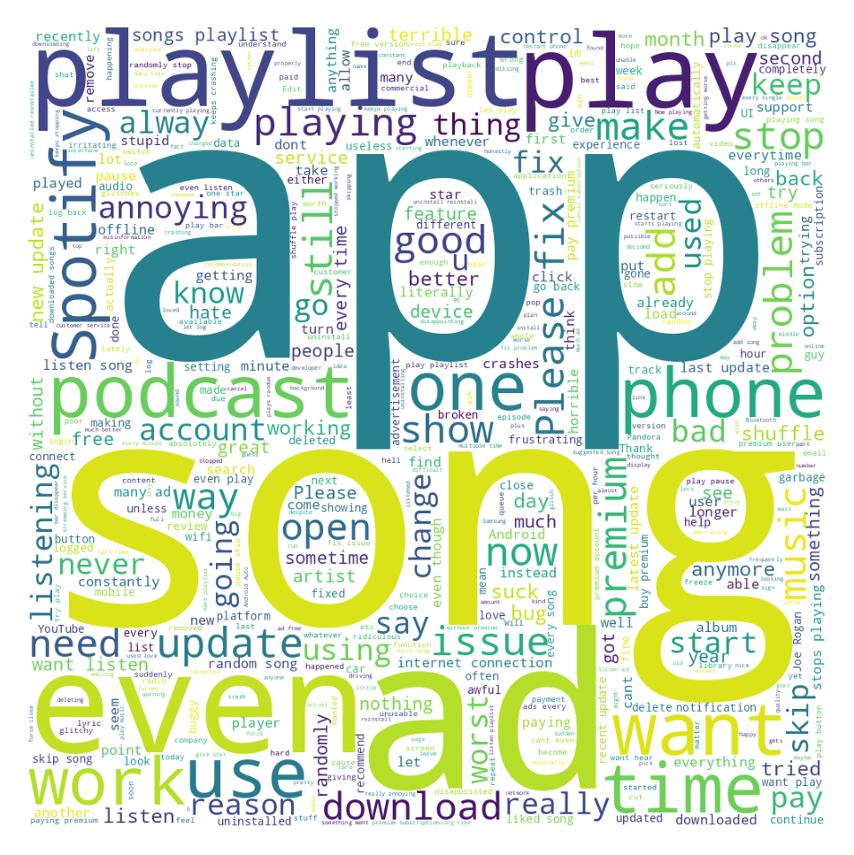
Palavras em Review
Vejamos agora a quantidade de palavras pelos Reviews
Para Reviews Negativos
df[df['Sentiment'] == 'negatives'][['Review_words']].describe()| Review_words | |
|---|---|
| count | 0.0 |
| mean | NaN |
| std | NaN |
| min | NaN |
| 25% | NaN |
| 50% | NaN |
| 75% | NaN |
| max | NaN |
sns.boxplot(data=df[df["Sentiment"] == 'negative'], x="Review_words")<AxesSubplot:xlabel='Review_words'>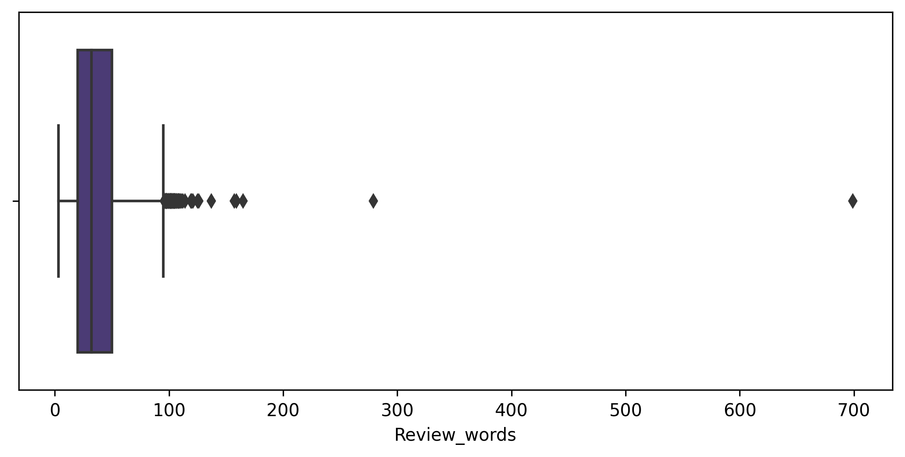
Para Reviews Positivos
df[df['Sentiment'] == 'positives'][['Review_words']].describe()| Review_words | |
|---|---|
| count | 0.0 |
| mean | NaN |
| std | NaN |
| min | NaN |
| 25% | NaN |
| 50% | NaN |
| 75% | NaN |
| max | NaN |
sns.boxplot(data=df[df["Sentiment"] == 'positive'], x="Review_words")<AxesSubplot:xlabel='Review_words'>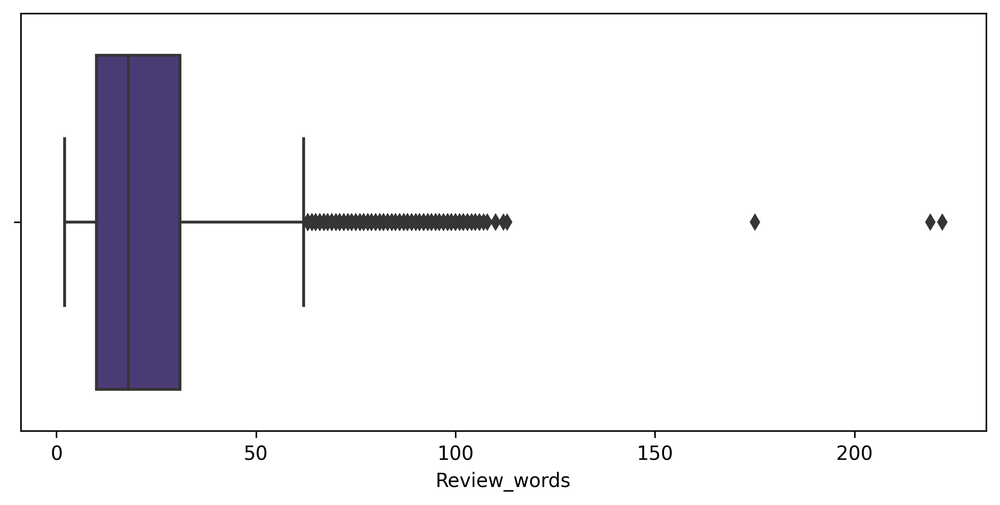
Revisitando o tempo
fig, ax = plt.subplots(1, 2)
ax[0].set_title("(a)")
ax[0].set_ylabel("Total")
ax[1].set_ylabel("Total")
ax[1].set_title("(b)")
sns.lineplot(data=df[df['Review_words']< 180], y='Review_words', x='day', hue='Sentiment', ax=ax[0])
ax[0].get_legend().remove()
sns.lineplot(data=df[df['Review_words']< 180], y='Review_words', x='month', hue='Sentiment', ax=ax[1])
fig.show()/tmp/ipykernel_16076/1149278297.py:9: UserWarning:
Matplotlib is currently using module://matplotlib_inline.backend_inline, which is a non-GUI backend, so cannot show the figure.
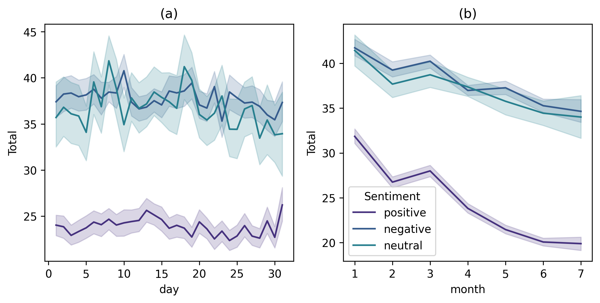
data = df[df['Sentiment'] != 'neutral']
## MODELAGEM
X = data['Review_wsw']
y = data['Sentiment']Como vimos, não temos covariáveis “automaticas” no dataset, assim faz-se necessário criar baseado no Review escrito, vamos aqui utilizar de duas técnicas, a saber Vetores de Contagens3 e TF-DF. Dessa maneira queremos avaliar o sentimento do usuário ao fazer o review escrito, por questões técnicas4 vamos utilizar somente os reviews que são positivos e negativos, dessa maneira removendo os classificados como neutros, tornando-se um problema de classificação binária.
plt.pie(x=y.value_counts(), labels=y.unique(), autopct='%.0f%%')
plt.title("Proporção dos Sentimentos")Text(0.5, 1.0, 'Proporção dos Sentimentos')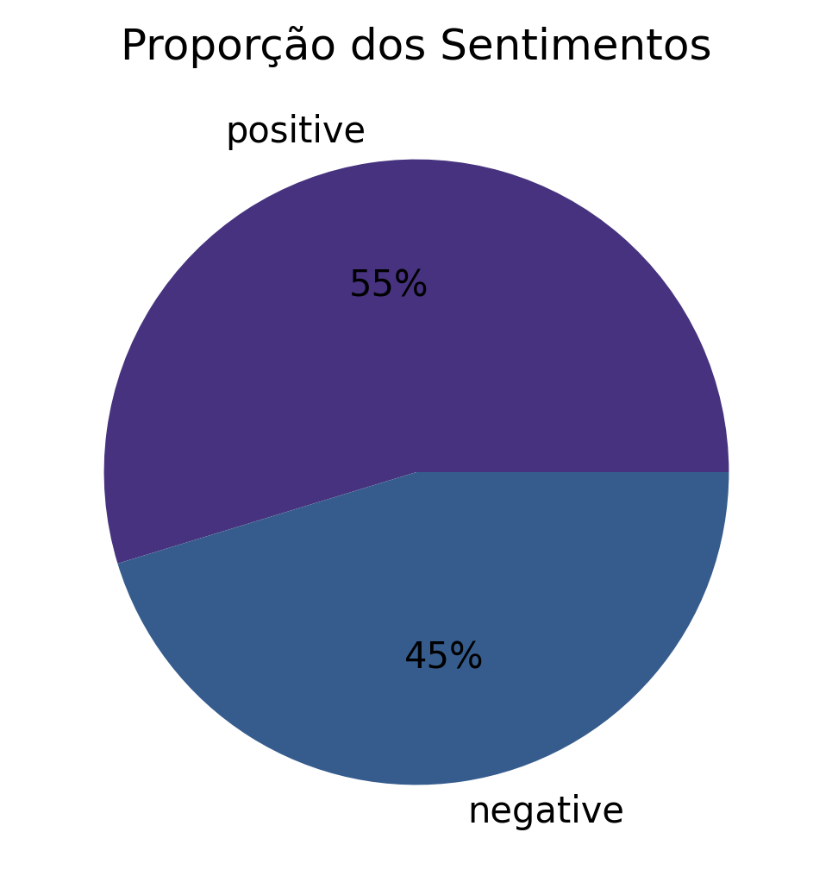
A ideia é bastante simples, vamos criar uma vetor para cada palavra única no banco de dados e associar a quantidade de vezes que aparece no review. 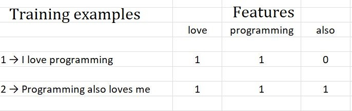
Footnotes
Stop Words são palavras as quais possuem uma alta taxa de frequência no texto, mas carregam pouca informações para a análise a ser realizada.↩︎
Tarefa de determinar se duas palavras tem a mesma raiz, apesar de diferença de “estrutura”↩︎
Count Vectorization↩︎
Técnicas aqui quer dizer: Não foi apresentado no curso↩︎